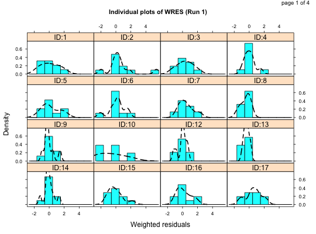
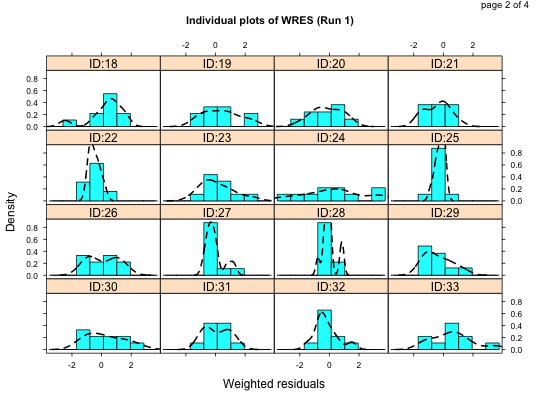
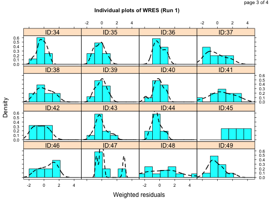
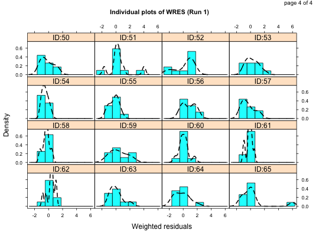
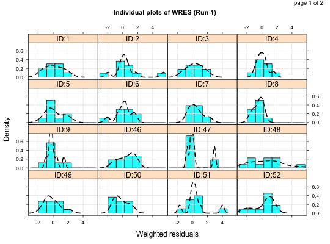
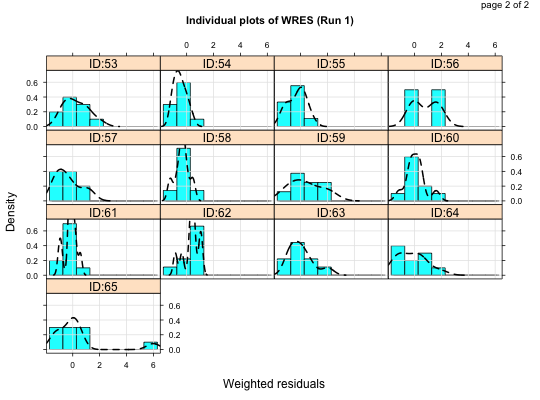
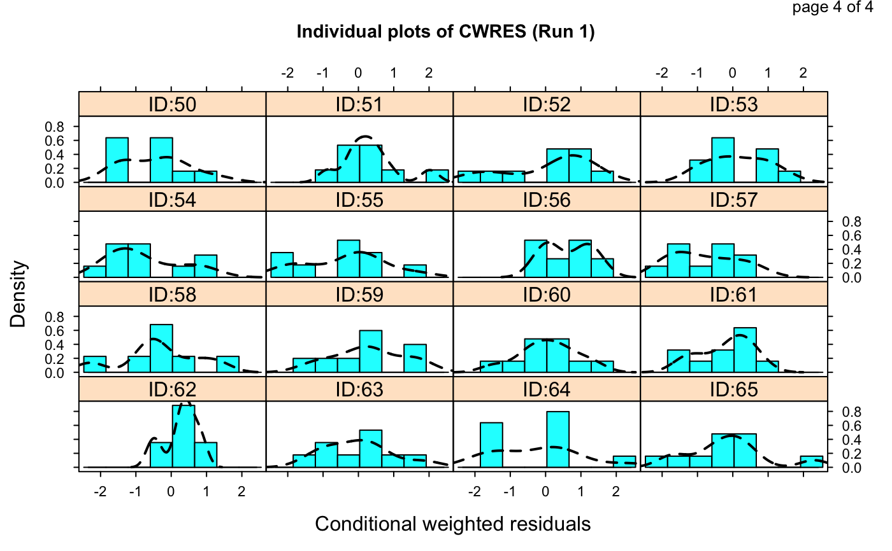
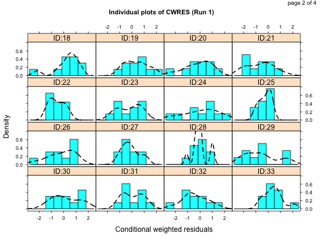
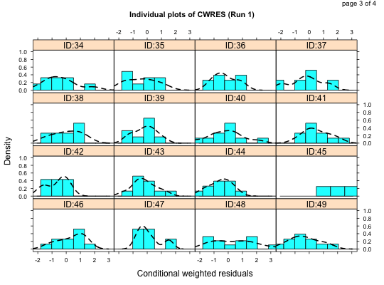
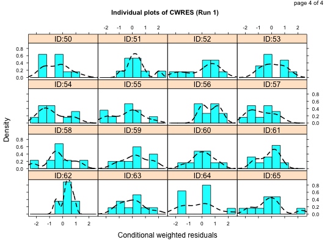

This is a compound plot consisting of histograms of the distribution of
weighted residuals (any weighted residual available from NONMEM) for every
individual in the dataset. It is a wrapper encapsulating arguments to the
xpose.plot.histogram function.
ind.plots.cwres.hist(object, wres = "cwres", ...) ind.plots.wres.hist(object, main = "Default", wres = "wres", ylb = NULL, layout = c(4, 4), inclZeroWRES = FALSE, subset = xsubset(object), scales = list(cex = 0.7, tck = 0.5), aspect = "fill", force.by.factor = TRUE, ids = F, as.table = TRUE, hicol = object@Prefs@Graph.prefs$hicol, hilty = object@Prefs@Graph.prefs$hilty, hilwd = object@Prefs@Graph.prefs$hilwd, hidcol = object@Prefs@Graph.prefs$hidcol, hidlty = object@Prefs@Graph.prefs$hidlty, hidlwd = object@Prefs@Graph.prefs$hidlwd, hiborder = object@Prefs@Graph.prefs$hiborder, prompt = FALSE, mirror = NULL, main.cex = 0.9, max.plots.per.page = 1, ...)
| object | An xpose.data object. |
|---|---|
| wres | Which weighted residual should we plot? Defaults to the WRES. |
| … | Other arguments passed to |
| main | The title of the plot. If |
| ylb | A string giving the label for the y-axis. |
| layout | A list giving the layout of the graphs on the plot, in columns and rows. The default is 4x4. |
| inclZeroWRES | Logical value indicating whether rows with WRES=0 is included in the plot. The default is FALSE. |
| subset | A string giving the subset expression to be applied to the
data before plotting. See |
| scales | |
| aspect | |
| force.by.factor | |
| ids | |
| as.table | |
| hicol | the fill colour of the histogram - an integer or string. The
default is blue (see |
| hilty | the border line type of the histogram - an integer. The
default is 1 (see |
| hilwd | the border line width of the histogram - an integer. The
default is 1 (see |
| hidcol | the fill colour of the density line - an integer or string.
The default is black (see |
| hidlty | the border line type of the density line - an integer. The
default is 1 (see |
| hidlwd | the border line width of the density line - an integer. The
default is 1 (see |
| hiborder | the border colour of the histogram - an integer or string.
The default is black (see |
| prompt | Specifies whether or not the user should be prompted to press RETURN between plot pages. Default is FALSE. |
| mirror | Mirror plots are not yet implemented in this function and this
argument must contain a value of |
| main.cex | The size of the title. |
| max.plots.per.page | Maximum number of plots per page |
Returns a compound plot comprising histograms of weighted residual conditioned on individual.
Matrices of histograms of weighted residuals in each included individual are
displayed. ind.plots.cwres.hist is just a wrapper for
ind.plots.wres.hist(object,wres="cwres").
ind.plots.cwres.hist: Histograms of conditional
weighted residuals for each individual
xpose.plot.histogram,
xpose.panel.histogram, histogram,
xpose.prefs-class, xpose.data-class
Other specific functions: absval.cwres.vs.cov.bw,
absval.cwres.vs.pred.by.cov,
absval.cwres.vs.pred,
absval.iwres.cwres.vs.ipred.pred,
absval.iwres.vs.cov.bw,
absval.iwres.vs.idv,
absval.iwres.vs.ipred.by.cov,
absval.iwres.vs.ipred,
absval.iwres.vs.pred,
absval.wres.vs.cov.bw,
absval.wres.vs.idv,
absval.wres.vs.pred.by.cov,
absval.wres.vs.pred,
absval_delta_vs_cov_model_comp,
addit.gof, autocorr.cwres,
autocorr.iwres,
autocorr.wres, basic.gof,
basic.model.comp,
cat.dv.vs.idv.sb, cat.pc,
cov.splom, cwres.dist.hist,
cwres.dist.qq, cwres.vs.cov,
cwres.vs.idv.bw,
cwres.vs.idv,
cwres.vs.pred.bw,
cwres.vs.pred,
cwres_wres_vs_x, dOFV.vs.cov,
dOFV.vs.id, dOFV1.vs.dOFV2,
data.checkout,
dv.preds.vs.idv, dv.vs.idv,
dv.vs.ipred.by.cov,
dv.vs.ipred.by.idv,
dv.vs.ipred,
dv.vs.pred.by.cov,
dv.vs.pred.by.idv,
dv.vs.pred.ipred, dv.vs.pred,
gof, ind.plots.cwres.qq,
ind.plots, ipred.vs.idv,
iwres.dist.hist,
iwres.dist.qq, iwres.vs.idv,
kaplan.plot, par_cov_hist,
par_cov_qq, parm.vs.cov,
parm.vs.parm, pred.vs.idv,
ranpar.vs.cov, runsum,
wres.dist.hist, wres.dist.qq,
wres.vs.idv.bw, wres.vs.idv,
wres.vs.pred.bw,
wres.vs.pred, xpose.VPC.both,
xpose.VPC.categorical,
xpose.VPC, xpose4-package
## Here we load the example xpose database xpdb <- simpraz.xpdb ## A vanilla plot ind.plots.wres.hist(xpdb)## subsets ind.plots.wres.hist(xpdb, subset="ID<10 | ID>45",grid=TRUE)## plot the CWRES instead ind.plots.cwres.hist(xpdb)